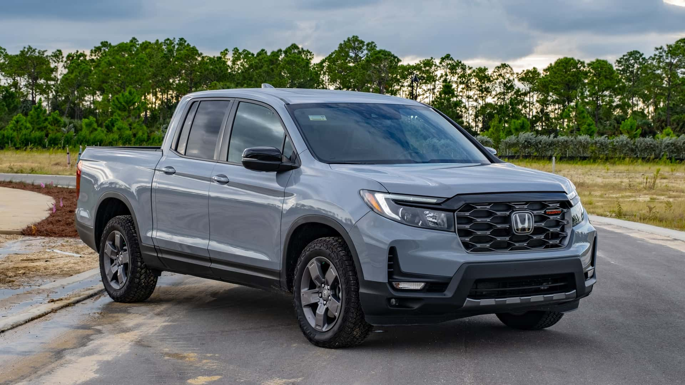
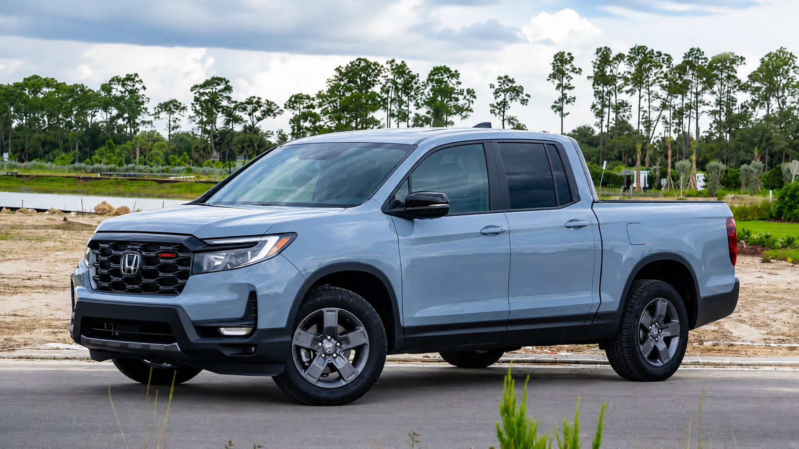

Picape da Honda concorrente da Rampage voltará ao mercado com novo V6 em 2028
A Honda Ridgeline está passando por uma reformulação e receberá um novo motor
Por Anthony Alaniz Traduzido por: Leo Fortunatti

Fonte: Jeff Perez / Motor1

Fonte: Jeff Perez / Motor1